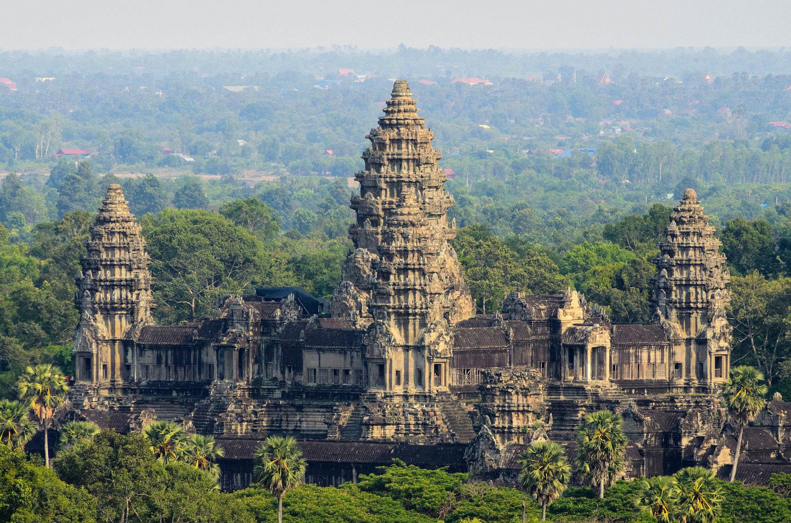

Angkor Wat (/ˌæŋkɔːr ˈwɒt/; Khmer: អង្គរវត្ត, 'City/Capital of Temples') is a Vaishnava Hindu and Theravada Buddhist temple complex in Siem Reap, Cambodia, and the largest religious complex in the world. Located on a site measuring 162.6 hectares (1.6 km2; 401.8 acres) within the ancient capital of Angkor, it was constructed between 1113 and 1150 CE during the reign of the Khmer king Suryavarman II as a Hindu temple dedicated to Vishnu. From the late 13th century onward, the complex was gradually transformed into a Buddhist temple and has remained an active center of Buddhist worship for centuries. Angkor Wat is noted for its monumental scale, extensive bas-reliefs, and architectural unity characteristics of Khmer architecture. Unlike most Angkorian temples, it is oriented toward the west. It is a symbol of Cambodia and appears on the Cambodian national flag
The temple was commissioned by Suryavarman II in Yaśodharapura, the capital of the Khmer Empire, as a state temple and is generally considered to have been intended as his mausoleum. Its architectural design combines the temple-mountain and galleried temple forms characteristic of Khmer architecture. The overall layout is commonly interpreted as a symbolic representation of Mount Meru, a cosmological concept shared by both Hindu and Buddhist traditions. The complex is surrounded by a broad moat and enclosed by an outer wall, within which three progressively elevated galleries rise toward a central quincunx of towers.
From the late 13th century onward, Angkor Wat became predominantly associated with Theravāda Buddhism. The monument was adapted for Buddhist worship and has remained in continuous religious use, a factor that contributed to its preservation and to its enduring role as a major religious, cultural, and national symbol of Cambodia.
The temple complex fell into disuse before being restored in the 20th century with various international agencies involved in the project. Restoration was coordinated by the International Coordinating Committee for the Safeguarding and Development of the Historic Site of Angkor (ICC-Angkor), established in 1993 under UNESCO. Major contributors included France (via the École française d'Extrême-Orient), Japan (JASA), India (Archaeological Survey of India), Germany (GACP), the United States (World Monuments Fund), South Korea, China, and Italy.[1]
The temple is admired for the grandeur and harmony of the architecture, its extensive bas-reliefs and devatas adorning its walls. The Angkor area was designated as a UNESCO World Heritage Site in 1992. Angkor Wat is a major tourist attraction and attracts more than 2.5 million visitors every year.
Source: https://en.wikipedia.org/wiki/Angkor_Wat